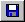
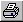

Editable Graph Additional Features
-  Opens Save dialog box to save data points to a text file.
-  Opens Print dialog box to print graph to a selected printer.
 Opens context-sensitive Help for the active graph window variable.
Opens context-sensitive Help for the active graph window variable.
- Reset All, Apply All, Reset, Apply, Cancel, OK.